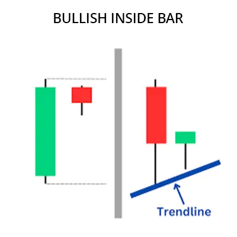

বুলিশ ইনসাইড বার প্যাটার্ন হলো একটি ট্রেডিং প্যাটার্ন ঘা বাজারের নিন্নমুখী
প্রবণতার অবসান এবং উধধ্বমুখী প্রবণতার সুচনা নির্দেশ করে। এই প্যাটার্নাট দুটি
ক্যান্ডলেস্টিক দিয়ে গঠিত হয়। প্রথম ক্যান্ডলেস্টিক হলো একটি নিম্নমুখী
ক্যান্ডলেস্টিক এবং দ্বিতীয় ক্যান্ডলেস্টিক হলো একটি উধর্বমুখী ক্যান্ডলেস্টিক যা
প্রথম ক্যান্ডলেস্টিকের শরীরকে সম্পূর্ণরূপে গ্রাস করে না এবং প্রথম
ক্যান্ডলেস্টিকের ওপেনিং এবং ক্লোসিং প্রাইসের মধ্যে থাকে।